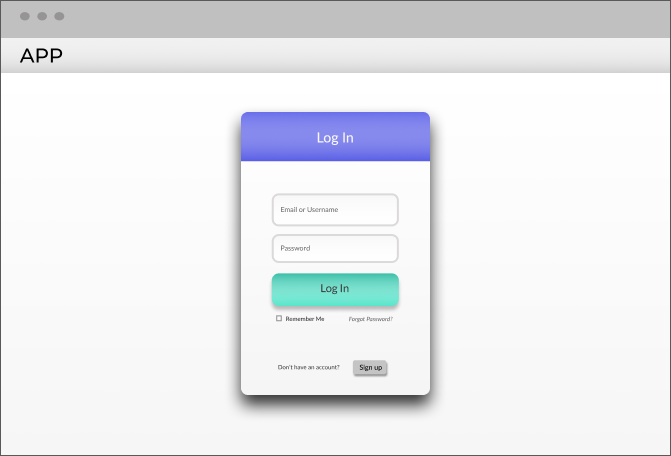
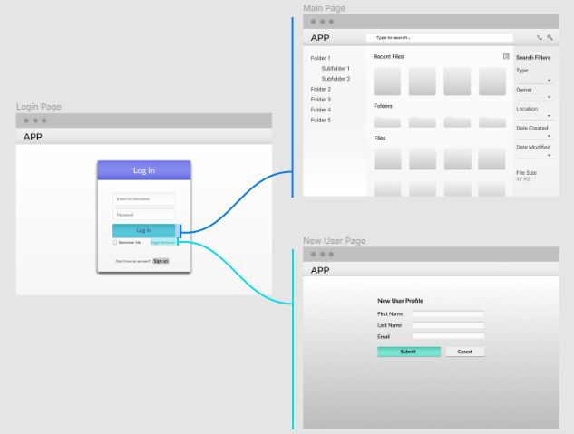

When I jumped into UX design, I realized early on that all UX designers created prototypes for the products they design. Prototypes are interactive modesl, and they’re a crucial step that happens usually right before the product is actually made. What I also learned is that many designers use a various methods on how they create these designs. With the amount of prototyping tools available, one can easily learn how to prototype and make ideas of designs a reality.
I’d like to dive into what prototyping is, why many deem it so important, and also a few ways to get started in prototyping your next project.
Value of Prototyping
What is it? Why do it? What prototyping tool should I use?
What is Prototyping?
The first thing that pops up on Google when you search for a prototype is that it’s a model from which other forms are copied or developed. In the world of UX, it’s the model right before the product, and it’s usually interactive; capable of replicating what the product would almost look like and function right before being developed into the actual thing.

Prototype of Login menu
Let’s take for example a prototype of a login menu I created with the prototyping tool Figma. What I’ve created here is a mockup design of the initial face of an app, where you have to log into the app in order to access it. To replicate what this looks like, I made the prototype interactive, so that you can see what happens if you log in. I also included a portion where, if you clicked on ‘Sign up’, it would take you to a screen where you can create an account for the app.

Initial site map of App example
Awesome! But...what’s the different between this and the actual product?
Since this is only a mockup of the website or app, there has been no code written to make this a living and breathing thing. The development side hasn’t started; it’s just a really cool way to design and visualize what it could be.
Why we Prototype
If we can create an interactive mockup that is as similar as possible to the actual product, then we can simulate what it can possibly do, even be tested with actual users. The interactive prototype can be utilized, manipulated, and be put through a ringer to make sure it works the way that it should, or if not then it can be redesigned to fix any issues that may occur.
A personal reason why I prototype is because my boss mentioned many times that she doesn’t understand what the jargon is for website design and development; she just wants to see what the thing will look like before it goes live. This is where prototyping comes in. A prototype can act as the blueprint to the product, and if the boss lady likes what she sees, then development can commence.
This makes sense. So how do I start making prototypes?
Tools needed for Prototyping
In the world of digital design, I have found that there’s a smorgasbord of applications, software, and online tools that can help you prototype. I’m going to talk about 2 tools that I have used, but if you are looking for a more extensive list, slickplan.com wrote an article about the top 11 prototyping tools you can use for 2020.
Adobe XD

I have less than a year experience with using Adobe XD, which is why I’m listing it off first because I use Figma a lot more. However, with the experience I have using it, it’s virtually the same product as Figma except with a few minor tweaks. It’s free to use, and the biggest advantage that it has over Figma is its integration with other Adobe products. For example, if you have access to Adobe Photoshop, Illustrator, or Fonts, you can easily drag assets made from these products into XD with no problem. I would highly recommend using XD if you already have the Adobe Suite at your disposal.
Figma

My bread and butter. As I said for Adobe XD, they are virtually the same product except with minor differences in how they work and the plugins that accompany the product. However, the biggest difference is that Figma is browser based. This convenience has saved my tushy numerous times whenever I didn’t have my own laptop readily available to work on a project for work. All I have to do is go on the nearest computer, open up any browser with a working internet and log into my Figma account and start working again. It also includes features for teams to work on the same project at the same time, which Adobe XD also has, however the convenience for anyone to hop on any computer as long as there's wifi and a browser sounds really nice. Did I mention that it’s also free to use?
Okay, I picked the right tool to use for this prototyping thingamajig. Now what?
Start designing! Much like any design tool, even Microsoft’s Paint program, just start figuring out how the product actually works. There are plenty of tutorials to choose and learn from, and if you’re interested, keep a look out for a tutorial that I’ll be working on that is an extensive intro into using Figma.